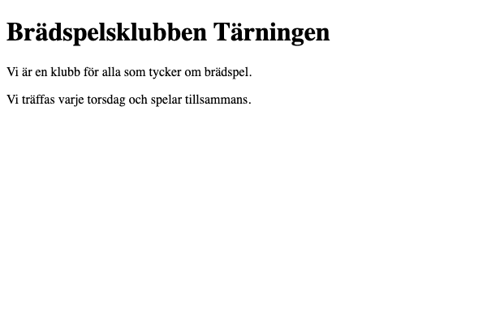

Övning T1 · Din första sida
Läs så här: Välj en nivå per etapp: 🟢 Grön ger dig varje steg, 🔵 Blå säger vad som behövs men inte koden, 🔴 Röd ger bara kravet. Etapperna är desamma på alla nivåer, så du kan byta nivå mellan etapperna (och mitt i om du fastnar). Varje etapp slutar med Så vet du att etappen är klar: kontrollera den innan du går vidare. Längst ner finns Vanliga fel och, om du vill ha mer, ⚫ Svart.
Du bygger: en startsida för en påhittad brädspelsklubb, Brädspelsklubben Tärningen. Sidan har en stor rubrik och två stycken text och visas i Chrome. Du skriver den i en egen mapp, ovningar, som du sedan använder i alla övningar i dag.

Du behöver: VS Code med tilläggen Live Server och Prettier, och Google Chrome. Allt det installerade du i morse med installationsguiden. Ett tillägg är ett litet extraprogram som du lägger till i VS Code. Live Server visar din sida i Chrome och laddar om den varje gång du sparar. Prettier ordnar koden, till exempel indraget, varje gång du sparar.
Etapp 1 · Mappen
Varför: en webbsida är filer i en mapp, och VS Code behöver veta vilken mapp du arbetar i.
🟢 Grön · Steg för steg
- Öppna VS Code. VS Code är programmet där du skriver koden.
- Välj menyn File → Open Folder… (heter Arkiv → Öppna mapp… om din VS Code är på svenska).
- En ruta för att välja mapp öppnas. Gå till mappen Dokument (Documents).
- Klicka på Ny mapp (Mac: knappen längst ner till vänster i rutan; Windows: knappen Ny mapp högst upp i rutan).
- Skriv namnet
ovningaroch tryck Enter. Skriv det exakt så: små bokstäver, utan å, ä, ö och utan mellanslag. Sådana tecken i fil- och mappnamn ställer ofta till det när sidan senare ska ut på internet. - Markera mappen
ovningaroch klicka Öppna (Mac) eller Välj mapp (Windows). - Frågar VS Code "Do you trust the authors of the files in this folder?": klicka Yes, I trust the authors. Det är din egen mapp.
Till vänster i VS Code finns nu filpanelen (Explorer), listan över filerna i mappen. Högst upp i den står OVNINGAR. Den är tom.
🔵 Blå · Med ledtrådar
Skapa en tom mapp som heter ovningar i Dokument och öppna den i VS Code. Kommandot heter Open Folder och finns i menyn File. Du kan skapa mappen direkt i rutan där du väljer mapp. Mappnamnet: små bokstäver, inga å, ä, ö, inga mellanslag.
🔴 Röd · Bara kravet
En tom mapp ovningar i Dokument, öppen i VS Code.
Etapp 2 · Skelettet
Varför: varje HTML-sida börjar med samma grundstruktur, ett skelett, och den skriver du en gång här så att du känner igen den i alla sidor framöver.
🟢 Grön · Steg för steg
- Håll muspekaren över OVNINGAR i filpanelen. Klicka på ikonen New File… (ett papper med ett plustecken).
- Skriv filnamnet
index.htmloch tryck Enter. Filen öppnas i mitten av VS Code..htmlpå slutet kallas filändelse och säger att filen innehåller HTML, språket som beskriver vad som finns på en webbsida.index.htmlär namnet webbläsaren letar efter först i en mapp, därför heter startsidan alltid så. - Skriv av koden nedan i filen, exakt som den står. När du skriver en starttagg, till exempel
<title>, skriver VS Code sluttaggen</title>åt dig direkt efter markören. Skriv då bara innehållet och hoppa förbi sluttaggen med högerpilen. Skriv den inte en gång till.
<!doctype html>
<html>
<head>
<meta charset="utf-8" />
<title>Brädspelsklubben Tärningen</title>
</head>
<body></body>
</html>- Spara med Cmd+S (Mac) eller Ctrl+S (Windows). Den lilla vita pricken på filens flik högst upp försvinner när filen är sparad.
Det här betyder raderna:
<!doctype html>talar om för webbläsaren att det här är en modern HTML-sida.- Ett element är en del av sidan. Det börjar med en starttagg, till exempel
<title>, och slutar med en sluttagg med snedstreck,</title>. Det som står mellan taggarna är elementets innehåll. <html>omsluter hela sidan. Inuti finns två delar:<head>med information om sidan, som inte syns på själva sidan, och<body>med allt som syns.<meta charset="utf-8" />säger vilken teckenkodning filen har, alltså hur tecknen är sparade. Utan den kan å, ä och ö bli konstiga tecken.charset="utf-8"är ett attribut: en extra uppgift som skrivs inne i starttaggen, med namn, likhetstecken och ett värde inom citattecken.<title>är texten som står på fliken i Chrome.- Att elementen ligger inuti varandra kallas nästling.
<head>ligger inuti<html>, och<title>inuti<head>. - Indraget, mellanslagen i början av raderna, visar nästlingen: ju längre in, desto djupare. Webbläsaren bryr sig inte om indrag, men det gör koden lätt att läsa.
När du sparar går tillägget Prettier igenom koden och ordnar indraget åt dig. Koden ovan är redan skriven så som Prettier vill ha den, så inget ska flytta på sig. /> sist i <meta … /> betyder ingenting för webbläsaren; Prettier lägger dit det på element som aldrig har något innehåll och därför ingen sluttagg.
🔵 Blå · Med ledtrådar
Skapa filen index.html i mappen (ikonen New File… i filpanelen). Skriv skelettet, i den här ordningen:
- raden som talar om att det är en HTML-sida (
<!doctype html>) html, som omsluter allt- inuti
html: försthead, sedanbody - inuti
head:metamed attributetcharset(värdetutf-8), sedantitlemed texten Brädspelsklubben Tärningen bodyfår vara tom än så länge
Spara (Cmd+S / Ctrl+S). Prettier ordnar indraget när du sparar och skriver om några detaljer, till exempel /> sist i meta. Det är rätt.
🔴 Röd · Bara kravet
index.html i ovningar med ett komplett HTML-skelett. Fliken i Chrome ska heta Brädspelsklubben Tärningen. Å, ä och ö ska visas rätt. Sidan är tom.
index.html syns i filpanelen och det finns ingen vit prick kvar på filens flik. Koden ser ut exakt som skelettet ovan, med samma indrag, efter att du har sparat.Etapp 3 · Sidan i Chrome
Varför: du ska se det du skriver medan du skriver, utan att leta upp filen själv.
🟢 Grön · Steg för steg
- Titta längst ner till höger i VS Code, i den smala statusraden. Klicka på Go Live. (Syns den inte: högerklicka på
index.htmli filpanelen och välj Open with Live Server.) - Chrome öppnas med sidan. Adressen överst börjar med
http://127.0.0.1:5500/. Live Server har startat en liten server på din egen dator, ett program som lämnar ut filerna i mappen till webbläsaren.127.0.0.1betyder "den här datorn". - Sidan är vit, det finns inget i
<body>än. Titta på fliken: där står Brädspelsklubben Tärningen. - Ställ VS Code och Chrome bredvid varandra på skärmen, så ser du båda samtidigt.
Öppnades sidan i en annan webbläsare än Chrome (till exempel Safari eller Edge)? Kopiera adressen därifrån, klistra in den i Chrome och arbeta i Chrome.
🔵 Blå · Med ledtrådar
Starta Live Server: knappen Go Live i statusraden längst ner i VS Code, eller högerklick på filen → Open with Live Server. Sidan ska visas i Chrome. Se till att VS Code och Chrome syns samtidigt.
🔴 Röd · Bara kravet
index.html visas i Chrome via Live Server.
http://127.0.0.1:5500/, och fliken heter Brädspelsklubben Tärningen med å och ä rätt.Etapp 4 · Rubrik och två stycken
Varför: nu syns något på sidan, och du ser att Chrome uppdaterar sig själv varje gång du sparar.
🟢 Grön · Steg för steg
- I
index.html: klicka mellan<body>och</body>och tryck Enter. - Skriv de här tre raderna där markören står:
<h1>Brädspelsklubben Tärningen</h1>
<p>Vi är en klubb för alla som tycker om brädspel.</p>
<p>Vi träffas varje torsdag och spelar tillsammans.</p>- Spara. Hela filen ser nu ut så här (Prettier har ordnat indraget):
<!doctype html>
<html>
<head>
<meta charset="utf-8" />
<title>Brädspelsklubben Tärningen</title>
</head>
<body>
<h1>Brädspelsklubben Tärningen</h1>
<p>Vi är en klubb för alla som tycker om brädspel.</p>
<p>Vi träffas varje torsdag och spelar tillsammans.</p>
</body>
</html>- Titta i Chrome utan att klicka på något. Sidan har laddats om av sig själv och visar en stor rubrik och två stycken text.
<h1> är sidans huvudrubrik, den största rubriknivån. <p> betyder stycke (paragraph), ett textstycke.
🔵 Blå · Med ledtrådar
Inuti body, i den här ordningen:
- en huvudrubrik (
h1) med texten Brädspelsklubben Tärningen - ett stycke (
p): Vi är en klubb för alla som tycker om brädspel. - ett stycke till: Vi träffas varje torsdag och spelar tillsammans.
Spara och titta i Chrome utan att ladda om.
🔴 Röd · Bara kravet
Sidan ser ut som slutbilden överst: en huvudrubrik och två stycken.
Etapp 5 · Titta in i sidan med DevTools
Varför: DevTools är Chromes verktyg för att se hur webbläsaren har läst din kod, och det är där du letar när något ser fel ut.
🟢 Grön · Steg för steg
- I Chrome: högerklicka på rubriken och välj Inspektera (Inspect på engelska). Det går också med Cmd+Option+I (Mac) eller F12 (Windows).
- En panel öppnas, DevTools. Klicka på fliken Elements (heter Element om Chrome är på svenska) om den inte redan är vald.
- Du ser koden för sidan, med små trianglar framför
<head>och<body>. Klicka på trianglarna för att öppna och stänga dem. Det är samma nästling som i din fil. - Håll muspekaren över raden
<p>i Elements. Stycket markeras i blått på sidan. - Dubbelklicka på texten i rubriken inne i Elements, skriv något annat och tryck Enter. Rubriken på sidan ändras.
- Ladda om sidan (Cmd+R / Ctrl+R). Din gamla rubrik är tillbaka. Det du ändrar i DevTools är bara ett test i webbläsaren; filen i VS Code är den riktiga sidan.
🔵 Blå · Med ledtrådar
Öppna DevTools i Chrome (högerklick → Inspektera, eller Cmd+Option+I / F12) och gå till fliken Elements. Öppna head och body med trianglarna. Håll pekaren över ett element och se vad som markeras på sidan. Ändra rubrikens text i Elements och ladda sedan om sidan: vad händer med din ändring?
🔴 Röd · Bara kravet
Hitta dina tre element i DevTools under Elements. Ändra rubriken där, ladda om, och förklara för dig själv varför ändringen försvann.
<h1> och två <p> inuti <body>, och <title> inuti <head>. När du håller pekaren över ett av dem markeras det på sidan. Du kan säga varför en ändring i Elements försvinner när du laddar om.⚫ Svart · Utöka (frivilligt, utan facit)
Ta bort sluttaggen </p> från det första stycket och spara. Titta i filen: vad gjorde Prettier? Ta bort </p> igen och spara den här gången utan att Prettier rör filen: tryck Cmd+K, släpp, tryck S (Windows: Ctrl+K, sedan S). Ser sidan annorlunda ut i Chrome? Titta i Elements: där står </p> ändå, för webbläsaren har gissat var stycket slutar. Byt sedan </h1> mot <h1> och spara vanligt. Vad händer på sidan, och vad gör Prettier nu? Skriv en mening om varför det är bättre att alltid skriva sluttaggen själv. Lägg sedan tillbaka allt.
Vanliga fel
- Ändringen syns inte i Chrome: filen är inte sparad. En vit prick på filens flik i VS Code betyder osparat. Spara med Cmd+S / Ctrl+S. Syns det fortfarande inte: kontrollera att adressen i Chrome börjar med
http://127.0.0.1:5500/och inte medfile://(då har du öppnat filen direkt och inte via Live Server). - Prettier ordnar inte indraget när du sparar, eller allt efter rubriken blir också stor rubrik: något är fel i taggarna. De två vanligaste: en sluttagg utan snedstreck (
<h1>två gånger i stället för<h1>…</h1>), eller en sluttagg som står två gånger för att VS Code redan hade skrivit den åt dig. Prettier rör inte koden när taggarna inte går ihop, så "inget indrag när jag sparar" är en bra varningssignal. Jämför rad för rad med koden i Grön. - Chrome visar en lista med filnamn, eller texten "Cannot GET": Live Server hittar ingen
index.html. Kontrollera att filen heter exaktindex.html(inteIndex.htmlellerindex.html.txt) och att du öppnade mappenovningarmed Open Folder, inte bara filen.